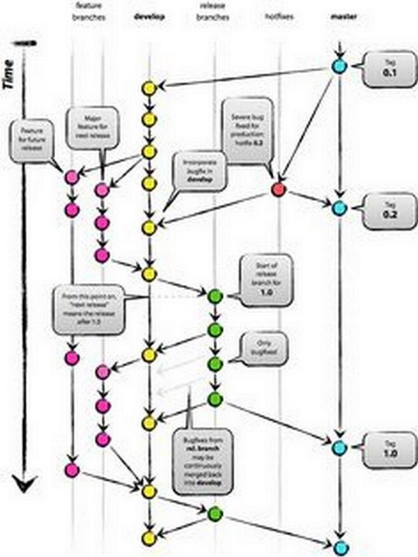

Why we need smart chatbots scripting LANGUAGE!
answering in the facebook post

I share here Marc’s comment:
I’ll leave it to Lauren Kunze to respond — vis a vis — AIML 2.x.
But what I CAN comment on is the tradeoffs between scripting languages and GUI/drag&drop GUI authoring approaches we’re seeing in the ChatBot marketplace.
On one side — clearly there is a great need for easily accessible Bot scripting environments — so that has led to the spread of these drag-and-drop interfaces. Clearly most people are not coders — but when was it written that ALL tasks need to be done by non-programmers?
Aren’t there situations where having programmatic control — is imperative and truly necessary?
Absolutely yes!
I hate to say this — but creating Bots — falls into that category!
On the other hand — one could debate the quality and flexibility of any given scripting language — and AIML and ChatScript seem to BOTH have plenty of the functionality required to create compelling Bot experiences.
Evidence — Mitsuku’s continued success and life-like experience.
Yes, you are referring to Mitsuku, Steve Warswick’s chatbot creature.
True nature of Open Source aside — it seems to me that PandoraBots is the world’s leading ChatBot tool company and that Lauren Kunze is doing a kickass job with PandoraBots — and taking it to the next level!
Kudos to Lauren.
What I think is missing from this discussion — is the data.
Your AI is only as good as its data. Does it really make sense to build a ChatBot — in a matter of hours?
I agree. Nonsense, for me.
Cause that says to me — “it probably doesn’t have much data behind it…..”
ChatBots are NOT something you want to build — quickly.
Or said conversely — ChatBots built in a hurry — display the quality of — a ChatBot built in a hurry.
Naturally.
There IS a place for a scripting language in this equation.
There is EVEN a place for drag-and-drop interfaces.
But without quality and deep data — I just don’t see how any one ChatBot can deliver — a decent experience.
I can’t agree more with you Marc,
BTW, please note I have nothing against Pandorabots a part the fact I do not like AIML (and I state AIML 2.x is proprietary; but that’s a minor question); that said, I often read with pleasure Lauren’s blog articles I re-tweeted sometime via my twitter account :-)
Now, I am a developer, and I probably share with you the perplexity with no-coding tools.
Decoupling back-end from front-end
Talking about botdev, in terms of software engineering, it’s better to decouple competences (and tools):
- Front-end:
Beforehand there is the dialog flow design, realms of possible new profession: conversational designer: I imagine this role covered by a “writer”, a novelist, a screenwriter, an expert in interactive-fiction, any creative with natural language narrative, etc. He/she design by example the personality of the bot (#botpersona), with specific language for specific customer/user context, etc. - Back-end:
On the other side there is the application business logic, realms of backend developers, that probably manage database interfaces, API with third party services, product/service components, etc.
It’s the usual standard way.
The reason I’m for chatbots scripting languages, is in order to decouple “frontend” from “backend” skills.
Now, I confess, I’m a console-based guy and I do not love drag-n-drop graphical tools, nowadays trendy, for a bunch of reasons:
- Whit these drug&drop stuff, as application developer, you become strictly-coupled with specific third party tools, and you do not own your conversational flow texts. So, I admit, I do not like Chatfuel-like and ALL OTHER SIMILAR webapps, last but not least IBM Watson Conversation, that I call (GUI-RAD) “AI-Blackboxes”.
- Viceversa, having your dialog flow as flat source files is an enormous value in the long term: you can edit/maintain easily your dialog flows, reusing all standard programming tools¶digma (sharing code among authors, using git, etc. etc.). Even building your (machine) learning supervisor to update scripts ;-), etc. etc. etc.
A Common Chatbot Scripting Language
There is a third important plus, sharing need, among #botdev developers/makers. We need a COMMON high level language for chatbot programming/authoring, that have to be an open standard (and possibly an open source implementation).
It’s about to gain usual advantages of open source languages, that allowed pretty all modern step forward in computer science; let’s think about what have been last decades software engineering with programming languages like C/C++, or more recently with beloved Ruby, and all in all with all widespread programming languages.
That’s the reason why I try to support and share:
- ChatScript by Bruce Wilcox (v. 7.1 released few days ago)
See also similar sons/subsets/inspired-by, like great opensource works:
- RiveScript by Noah Petherbridge
- SuperScript by Rob Ellis (v. 1.0 released yesterday)
We need, in conversational engineering, a common metalanguage to develop next generation complex #botapps!
My articles about the topic:
this article is related to the previous one:
About scripting, graphical drug&drop, development tools:
Beside that, maybe surprisingly, even if I’m great fan of scripting (in the development of complex #botapps), I’m myself developing a framework in Ruby, to build chatbots to implement strict (“dumb”) workflow-based / transactional applications (payment gateways, simple e-commerce, booking, etc.), see:
Follow Giorgio Robino on Twitter: www.twitter.com/solyarisoftware

Originally published on Medium.